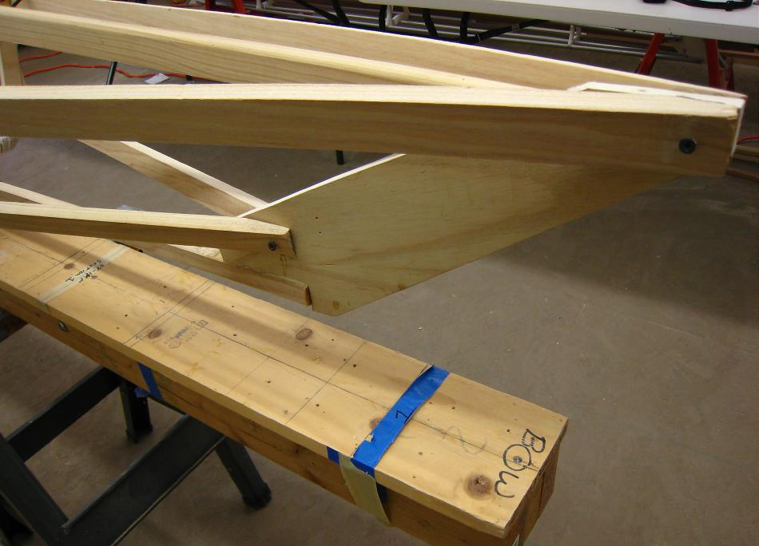

Gluing Stringer / Stem Plates
Menu
Last Page
Next Page

Apply a thin coat of epoxy to the stringers and stem plates. Drill and screw the connections together. Repeat the entire process at the stern.